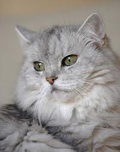
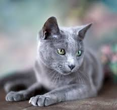
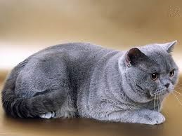
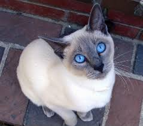
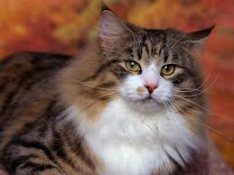

Kassid
Lõbusad faktid kasside kohta
Kassil on 38 kromosoomi.
Kassi aju kaalub 31,4 grammi.
Kõige raksem kass kaalus 23.3kg.
Kõge pikemema karvaga kassi karv on 25.6cm pikk.
Maailma kõige rikkamale kassile pärandati £7.000.000.
Seni kõige kauem elanud kass oli 38 aastat ja 3 päeva vana.
Kõige pisem kass oli oma teisel eluaastal vaid 7cm kõrge ja 19cm pikk.
Kõige valjema nurrumisega sai hakkama 2015 aastal Merlin, kui ta nurrus 67.8db.
Kõige rohkem varbaid on Canada kassil Paul Contantil, kellel oli 28 varvast, igal käpal 7.
Eri kasside liigid
PÄRSIA KASS
Päritolumaa:
Iraan

Välimus:
Pikakarvaline, jässaka keha ning lameda ümara näoga. Tavaliselt karvastik valge, kuid võib olla üks paljudest erinevatest värvidest.
Iseloom:
Rahulik, üldiselt leebe ja sõbralik. Peremehele lojaalne. Ei kratsi inimesi kergesti.
VENE SININE
Päritolumaa:
Venemaa

Välimus:
Kiilukujuline pea, sale ja liikuv keha. Karvastik sinise tooniga, tihti ühtlase hõbedase läikega; katsudes lühike ja pehme.
Iseloom:
Vaikne, kuid südamlik ja tark. Armastab mängida ning pere seltsis olla.
BRITI LÜHIKARVALINE
Päritolumaa:
Suurbritannia

Välimus:
Kogukas kass, pea ümar väikeste kõrvadega. Nina on lai ja lühike, saba paks ja ümar.
Iseloom:
Pigem vähenõudlik ning kuulekas. Kuigi ei karda üksi olla, saab hästi läbi laste ja koertega.
SIIAMI KASS
Päritolumaa:
Tai

Välimus:
Silmad mandlikujulised, pea kolmnurkne ja peenike. Sale, nõtke keha, mis on kaetud iseloomuliku kreemja karvastikuga.
Iseloom:
Energiline, vali ja aktiivne suhtleja. Armastab olla tähelepanu keskpunktis.
NORRA METSKASS
Päritolumaa:
Tai

Välimus:
Karvkate väga paks, kõrvades ja käppadel pikad tutid. Pikk saba on pidevalt õhus. Nägu kolmnurkne sirge ninaga.
Iseloom:
Uudishimulik, tark ja rahumeelne. Sellele vaatamata armastab nii inimeste kui ka teiste loomade lähedust.
Mõned nunnumad kassid
Risto kass
Siin saad rate'ida kiisusid!